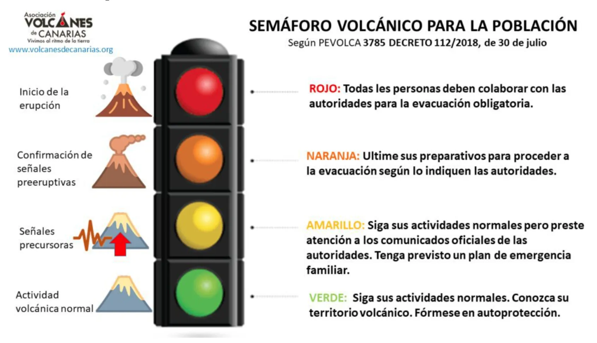

Què els ha passat als nostres companys?
La recent erupció del volcà a La Palma, a les Illes Canàries, ha generat una profunda preocupació i mobilització tant a nivell local com internacional. L'erupció, que va començar el passat 16 de maig, ha desencadenat fluxos de lava i emissions de gasos volcànics, obligant a l'evacuació de milers de residents i causant danys significatius en infraestructures i propietats. Les autoritats locals i els equips de resposta d'emergència han estat treballant incansablement per gestionar la situació i garantir la seguretat dels afectats. S'han establert albergs temporals i s'han implementat mesures de protecció civil per mitigar els riscos i proporcionar suport a les persones desplaçades.
Donar suport mitjançant donacions
Donar suport al poble canari en aquest moment de crisi és crucial per ajudar les comunitats afectades per l'erupció volcànica a La Palma. La teva generositat pot marcar la diferència proporcionant ajuda humanitària urgent, com aliments, aigua i refugi, als milers de residents desplaçats. A més, la teva donació contribuirà a la reconstrucció d'infraestructures danyades i a la recuperació econòmica de la regió, ajudant a restaurar l'estabilitat i el benestar de les famílies canàries. Uneix-te a nosaltres en aquest esforç solidari i demostrem la nostra solidaritat amb el poble canari en el seu moment de necessitat. Cada contribució, per petita que sigui, compta i fa una diferència real en les vides de qui més ho necessiten.
Donar suport mitjançant les manifestacions
El teu suport a les manifestacions en solidaritat amb el poble canari és fonamental en aquest moment de necessitat. Al unir-te a les protestes, estàs aixecant la teva veu per exigir atenció i acció davant la crisi provocada per l'erupció volcànica a La Palma. La teva presència demostra solidaritat amb les comunitats afectades i exerceix pressió sobre les autoritats perquè proporcionin el suport necessari en termes d'ajuda humanitària, reconstrucció i recuperació econòmica. Junts, podem enviar un missatge poderós d'unitat i solidaritat, mostrant al poble canari que no estan sols en la seva lluita per reconstruir i recuperar-se. Uneix-te a nosaltres en les manifestacions i fem que les nostres veus siguin escoltades en suport al poble canari.
Informació sobre els volcans canaris
